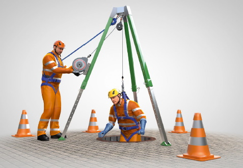
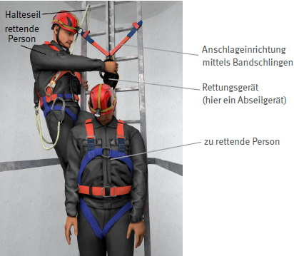
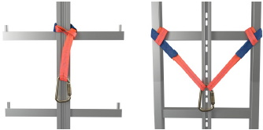
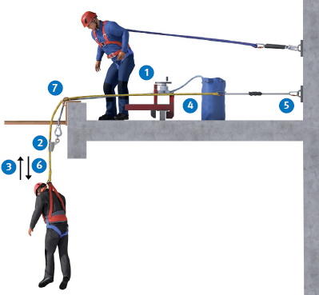
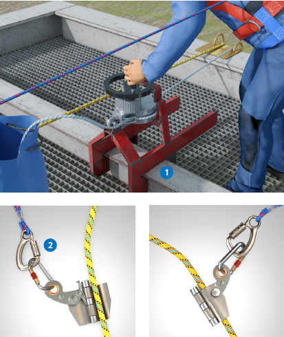
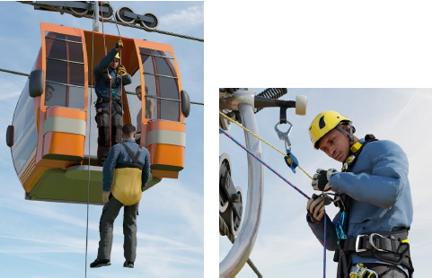
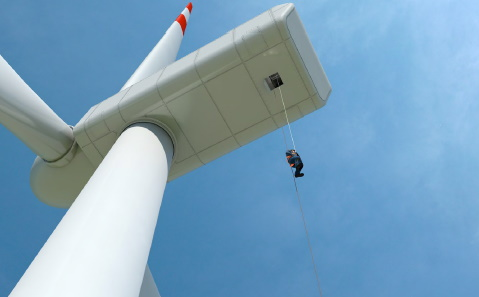

Im Folgenden werden Verfahren zum Retten mit Absturzschutzausrüstungen beispielhaft vorgestellt.
Bei den Rettungsverfahren ist darauf zu achten, dass die rettenden Personen gegen Absturz gesichert sind. Die Anzahl der zum Retten notwendigen Personen ergibt sich aus der Arbeitssituation und den örtlichen Gegebenheiten. Gefährdungen bei der Rettung und mögliche Schutzmaßnahmen sind beispielhaft in Anhang 4 aufgeführt.
Bei den Rettungsverfahren unterscheidet man zwischen:
Zur Rettung aus einem Kanalschacht oder ähnlichem sind, wie in Abbildung 2 dargestellt, ein Rettungsgurt bzw. ein Auffanggurt, ein Höhensicherungsgerät mit integriertem Rettungshubgerät (Rettung nach oben) und eine mobile Anschlageinrichtung (Dreibein) erforderlich. Mit der Rettungshubeinrichtung wird die durch das Höhensicherungsgerät aufgefangene Person von der rettenden Person hochgezogen.
Bei Arbeiten in Behältern, Silos und engen Räumen gibt die DGUV Information 213-055 "Arbeiten in Silos, Behältern und engen Räumen – Zugangs-, Positionierungs- und Rettungsverfahren" Hinweise zu möglichen Rettungsverfahren.

Abb. 2 Rettung aus einem Kanalschacht (Quelle: "Baustein A005" der BG BAU)
Zur Rettung aus einer Steigschutzeinrichtung sind, wie in Abbildung 3 dargestellt, ein Auffanggurt, ein Abseilgerät mit Hubfunktion und eine bzw. mehrere Bandschlingen (Anschlageinrichtung Typ B DIN EN 795) erforderlich. Steigschutzeinrichtungen sind als Zugänge, z. B. zu Dächern, in Hochregallagern, an Funkstandorten, Windenergieanlagen und Schornsteinen, anzutreffen.

Abb. 3 Rettung aus einer Steigschutzeinrichtung
Rettungsvorgang:
Zur Arbeitsplatzpositionierung und zum Anschlagen der rettenden Person und des Rettungsgeräts darf die Steigleiter und ggf. die Schiene der Steigschutzeinrichtung unter Berücksichtigung deren nachgewiesener Eignung als Anschlagmöglichkeit verwendet werden (Angaben des Herstellers beachten).
Für das Positionieren während einer Rettung wird empfohlen, dass sich die rettende Person zusätzlich selbst an der Steigleiter sichert.
Anschlagarten mittels Bandschlingen an Steigleitern mit Mittelholm und Seitenholmen sind in Abbilddung 4 beispielhaft dargestellt.

Abb. 4 Anschlagpunkte mittels Bandschlingen (links: Steigleiter mit Mittelholm; rechts: Steigleiter mit Seitenholmen)
Zur Rettung einer frei hängenden Person sind, wie in den Abbildungen 5 und 6 dargestellt, ein Auffanggurt, ein Abseilgerät mit Hubfunktion, eine Seilklemme und Anschlageinrichtungen erforderlich. Diese Rettung kann in Folge eines Absturzes, z. B. von Dachkanten, Podesten, Plattformen, Bühnen und durch Lichtkuppeln, notwendig sein. Zur Verhinderung des Hängenbleibens bzw. des Anschlagens an Bauteilen beim Rettungsvorgang empfiehlt sich die Verwendung eines Abhalteseils.

Abb. 5 Rettung einer frei hängenden Person
Die rettende Person befestigt das Rettungsgerät (1) an einer geeigneten Anschlageinrichtung/Anschlagkonstruktion. Zur Entlastung des Auffangsystems (4) wird das Seil des Rettungsgerätes mittels Seilklemme (2) mit dem Seil des Auffangsystems verbunden. Dazu ist vorher im Bereich der Absturzkante (7) ein Kantenschutz und ggf. ein Seilabhaltehebel vorzusehen. Danach wird die zu rettende Person mit der Hubeinrichtung angehoben (3) und das Auffangsystem vom Anschlagpunkt (5) gelöst. Anschließend wird die Person mit Hilfe des Abseilgerätes (1) nach unten abgelassen (6).

Abb. 6 Einsatz des Rettungsgeräts und einer Seilklemme
Zur Bergung1 aus einer Seilschwebebahn, wie in der Abbildung 7 dargestellt, sind Rettungsschlaufen, ein Abseilgerät und eine Anschlageinrichtung erforderlich.
Der Berghelfer oder die Berghelferin (rettende Person) fährt mit einem Seilfahrgerät zu den zu rettenden Personen. Nach dem Anlegen einer Rettungsschlaufe werden die Personen mit einem Abseilgerät zum Erdboden abgelassen. Die erforderliche Klasse des Abseilgeräts für den Rettungsvorgang ist nach Abschnitt 8.5 vorher festzulegen.

Abb. 7 Bergung aus einer Seilschwebebahn
1 Bergung bezeichnet alle Vorgänge, durch die bei Stillstand einer Seilschwebebahn die Fahrgäste an einen sicheren Ort zurückgeführt werden können.
Beispiel einer Rettung aus dem Maschinenhaus (Abbildung 8):
Zur Rettung aus einer Windenergieanlage (WEA) sind ein Auffanggurt, ein geeignetes Abseilgerät mit ausreichend langem Seil inklusive einer Reserve (z. B. wegen Einflüssen aus Wind oder Schrägabseilung) und bei Bedarf eine Rettungstrage, um eine Person aus einem engen Raum und aus großer Höhe zu retten, erforderlich.
Vor dem Hintergrund der im Notfall zur Verfügung stehenden Zeit (Evakuierung) ist zu prüfen, ob mehrere Abseilgeräte erforderlich sind. Sollen mehrere Abseilgeräte gleichzeitig eingesetzt werden, muss die Umsetzbarkeit beurteilt werden (Anzahl und Belastbarkeit der Anschlageinrichtungen, gegenseitige Beeinflussung der Seile usw.).

Abb. 8 Rettung aus dem Maschinenhaus